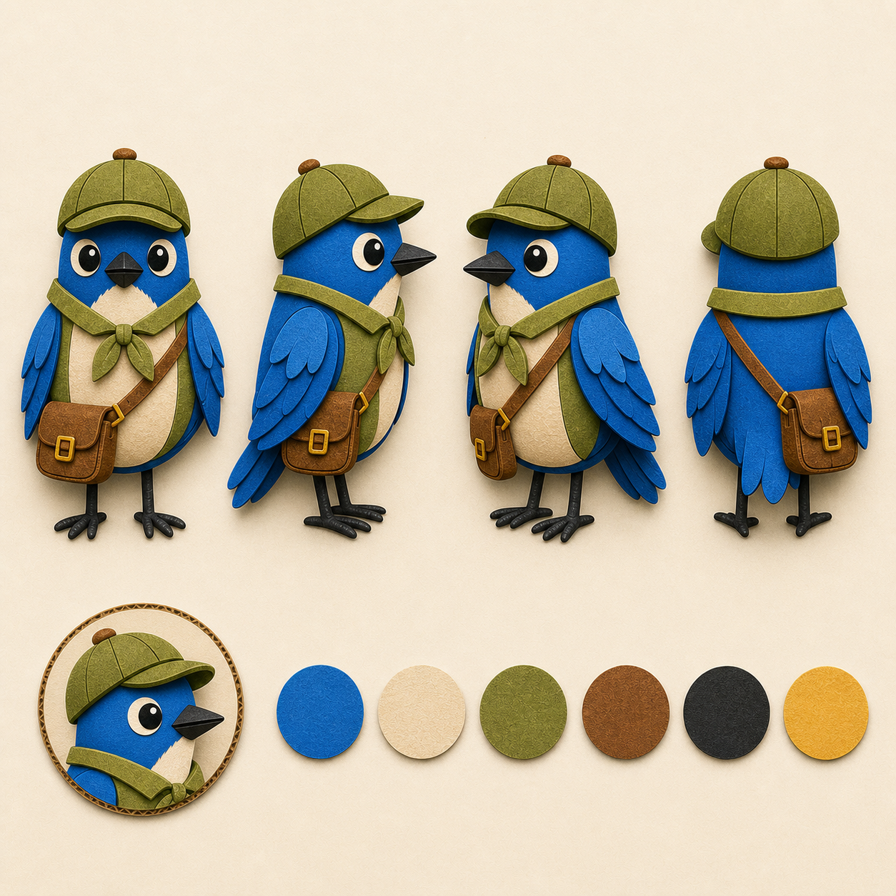
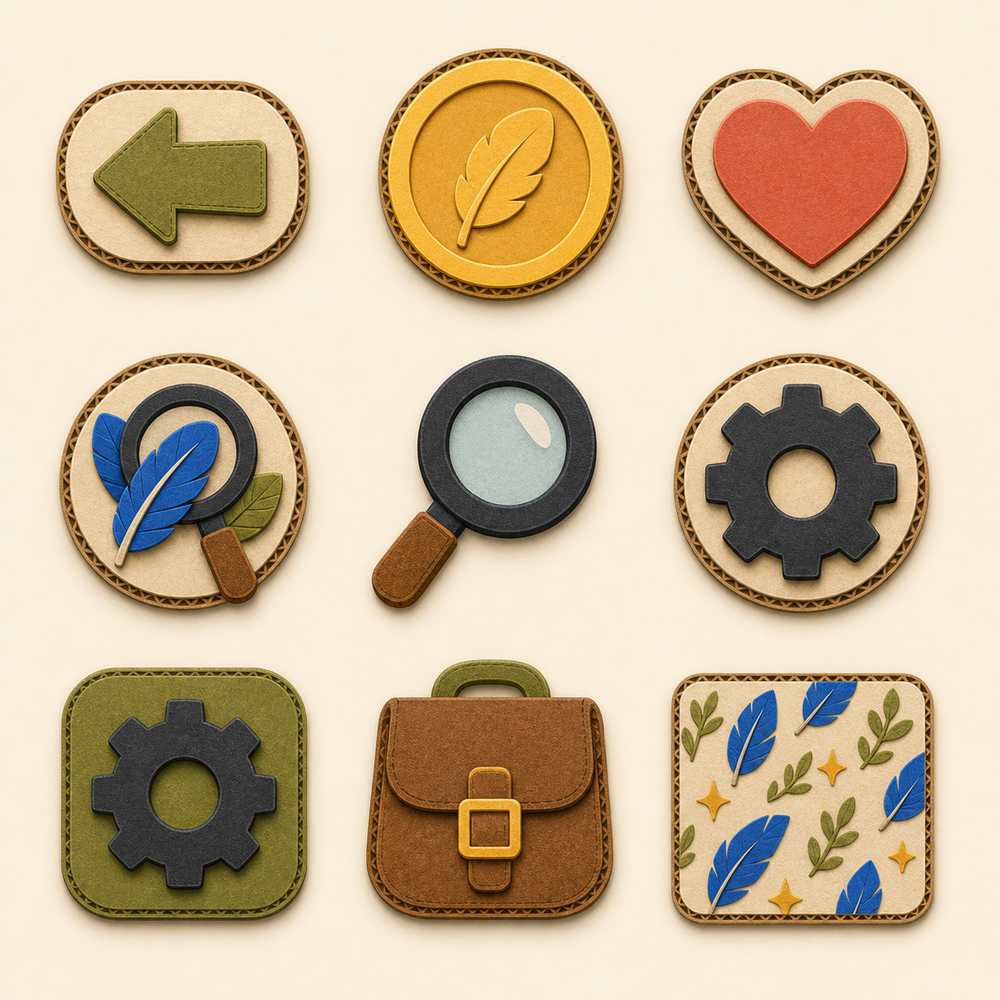
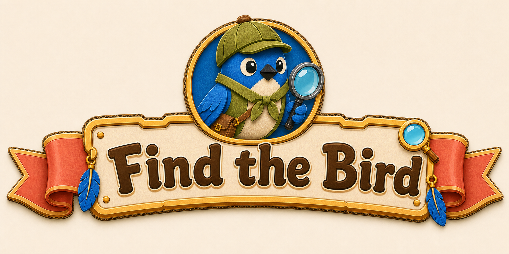
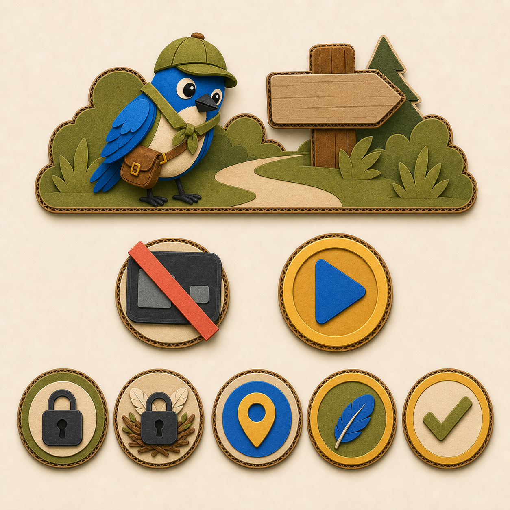
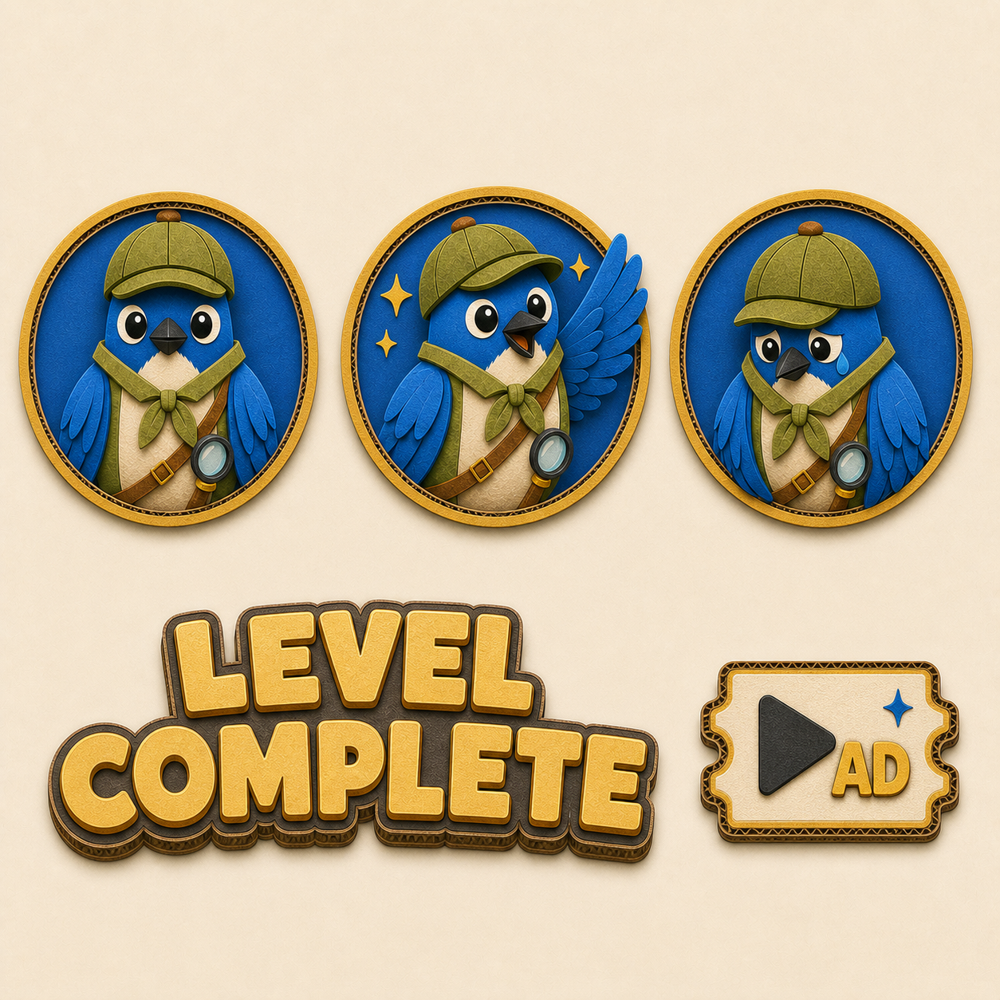

Canonical production reference
Find the Bird
approved asset system
P3 Bold Cardboard is locked across the explorer-bluebird mascot and all 40 non-level reskin slots. This page is the single visual source for runtime production.
P3 Explorer Bluebird
Stylized storybook anatomy, cardboard layering, explorer gear worn by strap or folded wing. No human arms, hands, or fingers.


Global UI primitives
One phone-readable silhouette, outline, cut edge, and shadow language.
Back · coin · heart · hint · magnifier · settings · gear · shop · pattern

Home and level path
The named banner below is canonical. Path states remain distinct by silhouette and symbol, not color alone.
Banner · no ads · play · locked · locked nest · current A · current B · complete


Mascot and results
Neutral, success, and failure poses preserve the locked anatomy. The magnifier is strap-mounted.
Boot avatar · success · failure · LEVEL COMPLETE · AD badge

Settings
Birdhouse home plus music, sound, and vibration tokens built for their smallest phone size.
Home · music · sound · vibration

Shop currency packs
Feather medallions replace paw currency; quantity and container silhouette communicate tier progression.
6 coin tiers · 3 hint tiers

Shop offers and badges
The FTD-structure no-ads products below are canonical: crossed ADS, then crossed ADS plus 5× feather magnifier.
Best Value · Popular · no ads · premium no ads · VIP